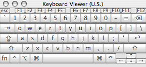
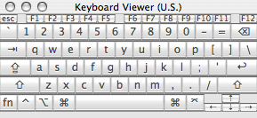
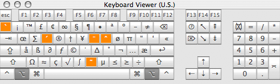

Customizing the Cocoa Text System
Version 0.8
by Jacob Rus
Monday, 20 March 2006
Apple’s Cocoa text system is a complicated beast, but also extremely flexible, and with a bit of work, it can be molded to match many working styles. This how-to covers the 2 major ways of customizing the text input system: Default key bindings, and for still more control, input managers.
I’m writing this guide because nothing like it currently exists. There is incredible room for flexibility in customizing the Cocoa text environment, but most users—even power-users—have no idea of the available options. This is mostly because Apple’s documentation is 1) aimed at developers, and 2) often incomplete or ambiguous. Most users have no idea that they can look at a file which describes all of the shortcuts on the system, and that they can easily add their own shortcuts, or replace existing ones with differing functionality.
For instance, one of the most common complaints from new Windows and Linux/Unix switchers is that many of the shortcuts they are used to, such as using the Home and End keys to move to the beginning, respectively end, of a line or document, don’t work as they expect in OS X.
For new users, almost every text box you use is a Cocoa text box (or close enough to act the same as far as we’re concerned) — Safari web form boxes, the text field in iChat for sending new messages, the documents in Pages or TextEdit, the email composer in Mail, etc. Note: Some text boxes are not Cocoa however, so the tricks in this article still aren’t completely universal. Notably, Microsoft Word, Adobe applications, AppleWorks, and the text fields in Camino and Firefox won’t work with this hint.
I expect that all users of OS X can get something out of this guide. I’m starting with the basics, so that new users, unfamiliar with the terminal and the intricacies of OS X can be brought up to speed. But even the most experienced users should hopefully learn something from this article; I know I learned several new nifty things while writing it.
Disclaimer: it is possible, when mucking around with the text system, to send applications messages they aren’t expecting. This can cause them to crash. As long as you stick to standard text selectors, you should be fine, but I’m not responsible if your program crashes because of a binding you add.
Terminology
Before delving too deeply into the intricacies of the Cocoa text system, it helps to understand some programmer jargon.
The Insertion Point (sometimes called the caret) is the blinking vertical line that shows where text typed into a text box will show up.
A Buffer is the text field currently being edited. This might be a text box in an online form in Safari, or the main window in TextEdit.
Key Bindings, often called ‘keyboard shortcuts’, define what happens when any key is typed in an application. For instance, in a Mac text editor, the ‘a’ key inserts an
a, ‘Opt-e, e’ inserts ané, and ‘Ctrl-a’ moves the insertion point to the beginning of the current line.A String is a chunk of text, literally a ‘string’ of letters.
A Method is a function that an object (which includes just about everything in Cocoa) can perform.
A Selector is the name of a method. It is a string. Something like
"insertTab:", or"save:"The Mark is an invisible point somewhere in the document, which can be set, and then returned to. Marking is the way regions of text were selected in UNIX text editors back in the days before they could be highlighted in blue with a mouse drag.
To Kill some text is basically the same as using the ‘Cut’ command, but in OS X uses a separate mechanism, that is localized to the current buffer. By default ‘Ctrl-k’ kills everything after the insertion point on the current line.
Yank is the analog of the ‘Paste’ command. By default, ‘Ctrl-y’ yanks back whatever was most recently killed.
Many of these terms crop up in the venerable Emacs editor, so reading about them in the Emacs context can be enlightening: Buffer, Key Bindings, Mark, Kill
Existing (Default) Functionality
Most users of Mac OS X, even long-time Apple geeks, know only a fraction of the available text system shortcuts. This is a tragedy, as they are consistent across all applications which use the Cocoa text system, including TextEdit, Mail, iChat, Safari, and countless third-party applications.
Simple Text Insertion
One thing every user knows is that when a plain letter is typed (assuming the input method in use matches the keyboard), that letter is inserted into a selected text box. When the shift key is held down, letters are capitalized, and symbol keys input the second symbol shown on them. For instance ‘Shift-]’ inputs the ‘}’ character.
It is possible to see all of the possibilities using the ‘Keyboard Viewer’ palette:
 

In addition, the option key, both alone and in conjunction with the shift key, will change the characters inserted. So ‘Option-y’ inserts a ‘¥’ currency mark, and ‘Option-Shift-c’ inserts a capital cedilla: ‘Ç’. We can see how option affects our input options using the Keyboard Viewer:


Users with full keyboards have a complete number pad, with an enter key (instead of return), and symbols used in arithmetic. This number pad is available to PowerBook and iBook users as well. The numlock key (Fn-F6), enables the small symbols printed at the lower right corner of powerbook keys to be input. But even more usefully, those keys can also be used as a number pad while the Fn key is held down. This is great for typing lots of numeric data, and also comes in handy when playing games that allow vertical, horizontal, and diagonal movement via the number pad:
Of course, there are a number of standard actions that the above pictures don’t show. For instance, when you type ‘Command-left’, the insertion point moves to the beginning of the current line. Also, OS X has a fairly large number of unix/emacs bindings built in.
The complete list of these extra commands takes up too much space for this page, so I’ve made them into a separate document.
Default key bindings
OS X has three main files which specify the key bindings used by Cocoa applications:
/System/Library/Frameworks/AppKit.framework/Resources/StandardKeyBinding.dict
/Library/KeyBindings/DefaultKeyBinding.dict
~/Library/KeyBindings/DefaultKeyBinding.dict
which contain, respectively, the default ‘built-in’ key bindings, system-wide
custom keybindings, and a user’s personalized key bindings. Don’t edit the
built-in /System/Library/ file, as this could seriously hose your machine.
Note that as usual, personalized bindings override the built-in standards.
If the DefaultKeyBinding.dict file doesn’t exist, don’t worry. Simply making
a KeyBindings folder in ~/Library, and then adding a new text file should
do the trick.
File Format:
This file is a normal Property List, which can be created
either with a text editor, such as TextWrangler, Smultron,
or TextMate, or with Apple’s Property List Editor, which is installed
with the developer tools. Property lists are pervasive in OS X, and are used
for all sorts of configuration files, and preferences. Any file which has a
.plist or .dict extension is a property list. Every application has an
info.plist file inside of it which tells OS X what types of files that
application can handle. Smart folders (.savedSearch files) are property
lists. The defaults command, which can be run from the terminal, is a quick
way to edit single items in a property list.
There are two types of property lists, old-style NeXT text files, and newer XML formatted files. I will use the old-style plists in this how-to, because they are easier to read and understand; they are more compact, with less distracting markup.
The NeXT property list format is a file format that can describe, using plain text, all of the objects used in Cocoa programs. We specifically care about 3 types: ‘strings’, ‘lists’, and ‘dictionaries’:
A string is simply a sequence of letters, numbers, and symbols, such as:
"this is a string with some $#@! symbols"A list is, like it sounds, a list of other objects, such as lists or strings:
("a", "list", "can", "contain", "many", "strings")A dictionary contains pairs of “keys” and “values”. Basically, dictionaries provide a way to name a bunch of objects, and refer to them by name. Note that while dictionary keys must be strings, the values can be any type of object.
{"key1" = "value1"; "key2" = "value2"; "key3" = ("a", "list");}In addition, comments can be added to old-style property lists by enclosing some text in
/*and*/
Every property list has a root dictionary object, which can contain sub-objects. A simple plist file might look like:
{
/* ** THIS IS A COMMENT: **
*
* Notice that each line in the dictionary has a 'key' string,
* and a 'value', which can be a string, a list, or another
* dictionary.
*/
"My String" = "Hey there!";
"My List" = ("first string", "second string", "final string");
"My Dictionary" = {
"Sub-string A" = "This is a string inside a dictionary";
"Sub-list B" = ("This is a list", "inside a dictionary");
};
}
This property list has three key-value pairs: a string, a list, and a dictionary.
The format of DefaultKeyBinding.dict
The DefaultKeyBindings.dict file is fairly straight-forward. It is a normal
property list, which as keys, uses the requested key bindings, and as values
uses the commands they should execute. For instance, I might want the letter
a to not type ‘a’, but instead insert a tab. If I put the following in my
DefaultKeyBinding.dict, then all Cocoa apps launched afterwards will insert
a tab key instead of an a:
{
/* This will make all a's turn to tabs. Beware. */
"a" = "insertTab:";
}
How to represent bindings
But of course, if we could only bind things to letter keys, this wouldn’t really be so useful, now would it? Fortunately, Apple’s engineers made sure that every key that you could possibly ever type can be put into a binding.
The way it works is simple. For lower-case and capital letters, simply type
the letter into the string. So "y" represents the ‘y’ key, while "T"
represents ‘Shift-t’. For numbers and symbols, including space, the same
holds. So "!" represents ‘Shift-1’, or however you type ‘!’ on your keyboard
layout. To add modifier keys, add a symbol corresponding to that modifier:
"@t"= Command-t
"^t"= Control-t
"~t"= Option-t
"@^T"= Command-Control-Shift-t
"~ "= Option-space
For numbers and symbols, to add the shift key is not as easy as typing a
capital letter, so $ stands for shift. Also, there is a difference between
numbers above the letter keys, and numbers on the keypad. To indicate keypad
keys, use #:
"@$#5"= Command-Shift-Numpad 5
"^6"= Control-6
Note: Lots of bindings with the Command key won’t work. This is done by Apple to ensure that applications can use these shortcuts for themselves, and not worry about user key bindings. Some will work, however, such as ‘Command-right arrow’.
There are still 2 limitations: First, what do we do if we want to bind a
literal ‘@’ or ‘#’ symbol? We escape it! By adding a \\ before the symbol,
we can avoid this. At the moment, the only way I can get ‘\’ itself to bind to
anything is by writing it as ‘\U05C’.
"~\\$"= Option-$
Second, if we were limited to symbols and modifiers, we would still cut off keys like ‘delete’, ‘tab’, and ‘esc’, so any keys that aren’t already covered can be entered using their unicode values:
Unicode values for Apple non-letter keys:
| Escape: | \U001B |
| Tab: | \U0009 |
| Backtab: | \U0019 |
| Return: | \U000A |
| Enter: | \U000D |
| Delete: | \U007F |
| Up Arrow: | \UF700 |
| Down Arrow: | \UF701 |
| Left Arrow: | \UF702 |
| Right Arrow: | \UF703 |
| Help: | \UF746 |
| Forward Delete: | \UF728 |
| Home: | \UF729 |
| End: | \UF72B |
| Page Up: | \UF72C |
| Page Down: | \UF72D |
| Clear: | \UF739 |
| F1: | \UF704 |
| F2: | \UF705 |
| F3: | \UF706 |
| … | |
| F35 | \UF726 |
| Not on Apple keyboards: | |
| Menu: | \UF735 |
Notes:
- ‘Backtab’ is ‘Shift-Tab’
- The key labeled ‘Backspace’ on most PC keyboards is the ‘Delete’ key
- The ‘Num Lock’ key on PC keyboards is ‘Clear’
- The keys labeled ‘Print Screen’, ‘Scroll Lock’, and ‘Pause’ are respectively ‘F13’, ‘F14’, and ‘F15’
- The key labeled ‘Insert’ is the ‘Help’ key
- I’m not sure whether the ‘Menu’ key actually does anything, as I don’t own a keyboard with that key on it.
For a complete list, including some keys that aren’t on current apple keyboards, but can still be used by OS X, see the Registry of Apple Unicode corporate-zone characters.
In general, the best way I’ve found to discover key’s escape codes is to use the free Key Codes application from Peter Maurer. The app brings up a floating palette which prints a log of all the keys typed.
More complicated bindings and actions
Of course, sometimes we wish we had more keys on the keyboard. Even with all of the modifier keys, it gets hard to keep different functionality separated, and things get confused. For this reason, it is possible to use multiple-keystroke bindings. To this end, instead of binding our first keystroke to a selector, we bind it to a dictionary, containing the second keystrokes. Emacs, the UNIX-based text editor, has many such multiple-keystroke bindings. Therefore, as an example of how this can be done, we will take Emacs bindings, and try to replicate them in Cocoa Text Widgets.
One Emacs command is ‘Control-x, u’, for ‘undo’. Another is ‘Control-x, Control-s’ for ‘save’. To add this command to our key bindings, we need to bind ‘Control-x’ to a dictionary of sub-bindings:
{
/* Control-x dictionary */
"^x " = {
"u" = "undo:"; /* C-x u => undo */
"^s" = "save:"; /* C-x C-s => save */
};
}
Our ‘Control-x’ parent dictionary can have several multiple-keystroke bindings associated with it. In this way, we can have whole areas of functionality given to one ‘parent’ key binding, with the resulting action to be determined by a letter. We can effectively have 4 or 5 keyboards for our bindings!
But of course, the number of bindings is not our only limitation so far. We are also limited by the range of selectors offered by the text box. We often find ourselves performing complicated actions repeatedly, and would like to invoke them with single keystroke. Mostly when this happens, Applescript, or some other programming language is the best solution. On occasion, however, the text system has enough power and flexibility to do the trick. This is because, besides single selectors, a binding can also execute a list of selectors, sequentially.
As an example, imagine that I often want to change paragraphs of text to all capital letters, but I’m tired of selecting the whole paragraph with my keyboard or mouse. I want ‘Control-Option-u to make my paragraph all uppercase, and then I want it to start a new paragraph by inserting two new lines at the end of the paragraph.
This (somewhat contrived) action can be broken into steps: 1. Select paragraph 2. Make all the letters uppercase 3. Move to the end of the paragraph 4. Insert two new lines.
We can make a plist of these directions:
{
"^~u" = ("selectParagraph:",
"uppercaseWord:",
"moveToEndOfParagraph:"
"insertNewline:",
"insertNewline");
}
So, with the the ability to map multiple-keystroke bindings to sets of actions that can perform complicated behaviors, what’s left?
Every time you type a key, the Cocoa text system looks for bindings, and if
none are found for the key, it instead passes the keystroke along as a string
input to the insertText: selector. Well, as luck would have it,
Kevin Ballard, from the ##textmate IRC channel on
freenode (a delightful place to chat, incidentally), found a real
gem, that doesn’t seem to be documented anywhere on Apple’s website, or
anywhere else: It is possible to use the insertText: selector as part of a
binding, and thereby bind an arbitrary string to a keystroke. If we bind a
key to a list, containing "insertText:" as one of its strings, the next
string in the list will be inserted into the text field. Example:
{
/* Realize that actually using this will render your a key
amusingly useless.*/
"a" = ("insertText:", "some fun text", "moveWordBackward:");
}
as a DefaultKeyBinding.dict file will make the ‘a’ key type ‘some fun text’, and then move the insertion point to the beginning of the word ‘text’, instead of the simply typing an ‘a’, as usual.
This is amazingly useful if there are some symbols or strings which must be
entered on a regular basis. For instance, imagine that I sometimes need to
type LaTeX Greek letters, and also sometimes need the associated unicode
symbols (for alpha, beta, etc.). The following DefaultKeyBinding.dict could
reduce this load considerably:
{
/* Greek unicode letters */
"^g" = {
"a" = ("insertText:", "\U03B1");
"b" = ("insertText:", "\U03B2");
"g" = ("insertText:", "\U03B3");
"d" = ("insertText:", "\U03B4"); /*
... */
}
/* Greek LaTeX letters */
"^m" = {
"a" = ("insertText:", "\\alpha");
"b" = ("insertText:", "\\beta");
"g" = ("insertText:", "\\gamma");
"d" = ("insertText:", "\\delta"); /*
... */
}
}
Now, when I type ‘Control-g, a’, ‘α’ will be inserted instead, and when I type ‘Control-m, g’, ‘\gamma’ will be inserted, etc.
It seems like this behavior is just an exception, as I haven’t found any other selectors which take an argument, but it’s a glorious exception, for which I can envision some truly creative uses.
For instance, if I want to drive some friends bonkers, I could set
DefaultKeyBinding.dict up to ROT13 all of my letters, to enable
“typing in code”. Or I could set it up to allow typing in leetspeak
(“1337”).
Most obviously perhaps, I could bind common phrases or code snippets to simple keystrokes. This would allow systemwide text shortcuts without the need for third-party applications (though the third party applications out there, notably Peter Maurer’s Textpander, do a lot more than key bindings allow).
One binding that I made, and it’s one of my favorites, allows me to type html and xml tags with ease. I have Control-shift-h make a starting and tag pair out of the word I’ve just finished typing, and put the cursor in the middle of them. Here’s the code:
{
/* This command will let Ctrl-Shift-H turn the previous word
* into an HTML/XML opening and closing tag pair. */
"^H" = ( "setMark:",
"moveWordBackward:",
"deleteToMark:",
"insertText:", "<",
"yank:",
"insertText:", ">",
"setMark:",
"insertText:", "</",
"yank:",
"insertText:", ">",
"swapWithMark:");
}
Finally, the possibilities for pranks on coworkers, significant others, etc. is considerable. For instance, we can set the keyboard up to malfunction on a couple of letters, maybe a ‘z’ could say “you didn’t *really* want to type that, did you?”:
{
"z" = ("setMark:",
"insertText:",
"you didn't *really* want to type that, did you?",
"selectToMark:",
"speakText:");
}
Moving right along, now that we have the idea of how to form our bindings, we can get to figuring out exactly which selectors are available to us.
Usable selectors
It is hard to figure out exactly which selectors a text box, and more generally, an application, will respond to. There are a huge number of options, but they are not all documented in one place. This is partly because if one object in an application doesn’t respond to a particular message, it will pass the message along to its parent object.
Still, we can find a large number of useful selectors by searching through the documentation we can find, and testing what the selectors do. The biggest source of selectors that we might want to use is in the NSResponder class — see its documentation. Specifically, we care about the ‘Action methods’ section. Also, the documentation for NSText has some selectors we can use, and many other classes provide useful selectors as well, such as NSDocumentController and NSWindow.
Because there are so many usable selectors, I’m putting them in a separate page. Here’s a link.
Examples
I’ve put together some examples of how this could be used. To use one of
these, simply rename the file to DefaultKeyBinding.dict and plop it in the
~/Library/KeyBindings folder. One of the most common uses of custom key
bindings is emulating another operating system or environment, such as Windows
or Emacs or BBEdit:
- Emacs emulation key bindings with esc as meta key
- Emacs emulation key bindings with opt as meta key
- BBEdit emulation key bindings (far from complete)
- Windows emulation key bindings (I’m still working on this one, if someone has a list of windows default key behaviors, email me: jacobolus [at] gmail.com)
Beyond that, it’s possible make key bindings as pranks. That’s always fun:
Text System Defaults
Besides making our own key bindings, there are a few other nifty changes we
can apply to the Cocoa text system, using the “defaults” system. Apple’s
developer site tells about them. Some of
these defaults are for unimplemented features, and are therefore worthless to
us. There are three defaults however which are of interest to us here. They
can be set using the defaults terminal command. I will show them applying
globally with the -g flag, but it is possible to set them on an application
by application basis, by for instance specifying com.apple.textedit instead
of -g.
NSTextKillRingSizeThis default sets the size of the kill ring. It can be set as follows:
defaults write -g NSTextKillRingSize -string 4This changes the size of the “kill ring” which large deleted blocks of text get copied to. In this case, I have set it to keep track of the 4 most recent such blocks. This means that this text can be cycled through, and won’t be lost as soon as more text is killed. An extra binding is useful in dealing with a kill ring:
yankAndSelect:, which cycles through the kill ring.NSRepeatCountBindingThis one is one of the coolest features of the text system. In emacs, pressing “Control-u”, and then a number, 94 say, and then any other command, will repeat that command 94 times. It is possible to set OS X to do the same thing with “Control-u” as follows:
defaults write -g NSRepeatCountBinding -string "^u"Of course, any other binding could be set instead of “Control-u”.
NSQuotedKeystrokeBindingThis default is normally linked to Control-q. It causes the next keystroke typed to be passed through the system, without activating any bindings. For example, if the “Option-v” is bound to scroll up in the key bindings file, a square root sign — √ — can still be entered by typing “Control-q, Option-v”.
Input Managers
NeXT and Apple realized, when they created Cocoa, that many actions could not be foreseen by their framework developers. The key binding system is great if we want to stick within the usual sorts of operations on English text, such as transposing two letters, skipping the end of a paragraph, or upper-casing a word, and we can combine these simple actions, but sometimes to do what we want requires more.
An input manager is a piece of code which is loaded into every running Cocoa application. The purpose of an input manager is to extend the text system in ways not thought of by the application’s original programmers.
We’ve all been hearing of late about how input managers can be used for nefarious purposes, but as long as they stick to modifying the text system, they mostly stay out of trouble, and they can be incredibly useful. Two input managers in particular are quite popular:
First, Mike Ferris’s TextExtras extends the Cocoa text system in ways that programmers, particularly, will find useful. I haven’t spent too much time playing with TextExtras, especially since TextMate, my editor of choice, doesn’t quite use the same Cocoa controls as other Cocoa-based editors like SubEthaEdit and Smultron. But TextExtras adds quite a bit to the Cocoa text system, including indent wrapping, auto-indentation, showing and selecting matching braces, improved completion, and, perhaps most of all, customized piping of text through shell commands. This allows all sorts of snazzy behavior (note that editors like TextWrangler and TextMate have their own implementations of this feature).
Second, one of my favorite text-system extensions is Michael McCracken’s Incremental Search Input Manager (ISIM). Here’s a link to a zip-file of the universal binary.
ISIM is an input manager that provides three new selectors for binding in our
DefaultKeyBinding.dictfile:ISIM_incrementalSearch:,ISIM_reverseIncrementalSearch:, andabort:(that last one may work for other things, I’m not sure). The idea is pretty simple, but incredibly useful. Basically, when the selector is invoked, a little window pops up at the bottom of the current text box. When you type into this little window, ISIM searches through the current document searching for text that matches, and selects the first occurrence of such text. Repeatedly invoking the selector flips through any other occurrences in the document. A picture can say this better than I can:
The relevant part of my key bindings file looks like this:
/* Incremental search */ "^s" = "ISIM_incrementalSearch:"; "^r" = "ISIM_reverseIncrementalSearch:"; "^$g" = "abort:";Finally, for those who can’t get enough customization in a straight NSTextView, using the techniques described already, Gus Mueller made an input manager, described in two blog posts, which allows the contents of any Cocoa text field to BBEdit. Type the relvant key, and your text will pop up in a new BBEdit document. Save, and the text in the original text field is updated. It’s awesome. According to the second post, modifying it to work with any editor which uses the ODBEditor suite (used mainly by FTP programs to open remote files in a local text editor) would be easy—it’s open source.
TextMate, my editor of choice, comes with a similar input manager, I believe inspired by the first one. And the great thing about TextMate’s version is that it works in Mail (I’m not sure, but I think Gus’s doesn’t). If there’s a text editor you like, it’s extremely nice to be able to edit Safari form fields, emails, and other text using that editor.
Even Lower-Level Hacking: Keyboard Layouts
First, we haven’t seen any way to remap modifier keys so far. This can be easily accomplished using the Keyboard and Mouse preference pane. Click the ‘modifier keys’ button at the bottom of the view, and a nice sheet pops up. Mine, which I’ve set to put the keys on a Model M keyboard in the right places, with ‘Control’ where it belongs next to the ‘A’ key, looks like this:

For even finer control over the keyboard, it is possible to create customized keyboard layouts. These allow any unicode glyphs to be mapped to the keys on the keyboard, so alternate language scripts can be entered, etc. This will work across the OS, not just in Cocoa text editors, but is also a much lower-level change, which means that messing it up could be much worse. I haven’t actually ever used any layouts other than U.S. on my PowerBook, so I don’t know how easy this is. There is a pretty nice GUI editor for this from SIL called Ukelele. It has great documentation, and should be all that is needed to make custom keyboard layouts.
Finally, for the truly adventurous, it is apparently possible to go even lower-level than Ukelele, and patch the ADB codes which are registered by Apple’s USB keyboard drivers. I’m not sure exactly which versions of OS X this works with, and any hacking at this level requires a serious disclaimer, as a wrong move here could really mess up your system. But here are two links at snark.de which discuss such arcane trickery. Good luck to any who try this. This same guy (Heiko Hellweg) also made his own keyboard layout, and patched Apple’s keyboard drivers to give himself a meta key:
“I got myself the Tiger-Version of the ADB Keyboard Driver (AppleADBKeyboard-238.3.4) and hacked away in XCode. My current setup uses the obnoxious enter key (between the cursor keys and the right command key) as the alt modifier (you can do that without a compiler by just fiddling with info.plist) and turns the original alt-key on the left onto a META key that sends escape in front of every other key as long as it is pressed (for this one, i needed to replace
/System/Library/Extensions/AppleADBKeyboard.kextwith an actual modified binary).“Now i can actually type ahead blindly without thinking twice. Contact me, if you are interested in using this too.”
Needless to say, I wouldn’t advise trying this, unless you know what you are doing.
Useful Links
TODO: Much of this list of links is still incomplete
Text Editors
Free Cocoa text editors for OS X:
- TextEdit — Comes on every Mac
- Smultron — Clean, simple, Open-source text editor. Named after some sort of Scandinavian strawberry. Can’t beat free!
Commercial Cocoa text editors:
- TextMate — most awesome text editor ever. I really can’t recommend this one enough. If you type lots of text, whether it’s C or Python code, LaTeX, John Gruber’s Markdown, or anything else, TextMate is amazing. It uses a different text box than the usual Cocoa one, so not all of the things discussed here will work, for instance, tying multiple commands to one binding, or using multiple keystroke commands. Still, TextMate allows far more customization than NSText widgets in general, so custom system bindings aren’t as necessary.
- SubEthaEdit — Nifty collaborative editor, which allows people halfway around the world from each-other to work on the same text file at once. This editor kicks all kinds of ass when it comes to collaborative note taking, or pair programming. It’s not too shabby for solo programming either.
Non-Cocoa text editors for OS X:
- TextWrangler — Excellent (free!) editor from Bare Bones.
Not Cocoa, so the keybindings described in this how-to won’t work, but a great Mac citizen nonetheless, with lots of scriptability, and excellent documentation. - BBEdit — Bare Bones’s flagship editor. $200, or $130 as an “upgrade” from the free TextWrangler, or $50 for educational users. Steep pricing, but does most everything you’d ever expect a text editor to do, and more. I think I still like TextMate better, but Mac users have sworn by BBEdit for almost as long as I’ve been alive.
Apple Developer Documentation
Apple has some documentation for the key bindings, but all in all it is far from adequate, especially for regular users, as opposed to competent Objective-C hackers.
- About Key Bindings — A brief note.
- Text System Defaults and Key Bindings — A longer explanation of some of the possibilities with key bindings, which also shares some cool text system defaults, editable from the command line.
- The NSResponder class — The NSResponder class is chock full of useful selectors to try to bind keys to.
- Text Input Management — This extensive article is far beyond the scope of this guide, and also only somewhat relevant. It details the nitty gritty of the Cocoa Text system, including information on how to create your own input managers.
- Introduction to Property Lists — Apple’s documentation of the property list format, covering both old-style and XML formats.
- Registry of Apple use of Unicode corporate-zone characters. — not at Apple.com, but this text document tells the unicode values of all the control keys we want to put in our bindings.
Third-party documentation
- Llew Mason’s pretty good explanation of key bindings in OS X
- A page at Cocoa Dev about them
- A page by ‘misaka’ at deepsky.com
- Shane Celis’ description at gnufoo.org
- An example key bindings file
- Michael C Thornburgh has some Vi-ish keybindings at his site, armory.com, in xml plist format.
- David Pogue’s comparison of keyboard shortcuts on Windows and on the Mac.
Key Bindings Editors
- Gerd Knops’s Key Bindings Editor is a Cocoa application which allows the viewing and editing of key bindings files. It knows where the system, XCode, and TextMate key bindings are, and allows html and plain text export.
- Mikael Langer’s TextMacro does some stuff which is no longer needed… it’s an input manager which allows arbitrary text to be input with key bindings, and is supposed to provide for multiple sets of key bindings which can be swapped out. It is implemented as a preference pane.
Input Managers
- Incremental Search Input Manager
- TextExtras
- XML Tag Input Manager — Annard Brouwer’s free input manager for selecting XML/HTML tags; it lets your mouse get in on the text system action.
Tangentially-related MacOSXHints hints
- Prewrap Lines in Mail.app discusses TextExtras, and gives an example of an application.
- Find and replace special characters in Cocoa apps
— A hint by Bill Bumgarner about
NSQuotedKeystrokeBinding, which is Control-q by default. - Enabling meta-key Emacs shortcuts in Cocoa apps — this one isn’t really so tangential: it shows users how to get emacs emulation by putting installing a custom keybinding file (the emacs emulation is not nearly as complete as ours above ;-) ).